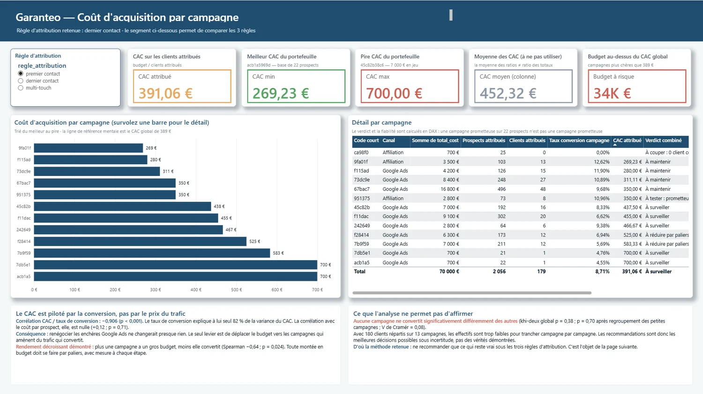

70 000 €
de budget analysé sur 2023
Projet final · Formation Data Analyst DataBird
Garanteo croyait payer 372 € pour acquérir un client. Elle en payait 389 €. Et son classement de campagnes s'inversait selon la règle d'attribution choisie.
Le point de départ
Garanteo, assureur français fondé en 2015, dépense 70 000 € par an en acquisition digitale sur 13 campagnes Google Ads et affiliation. La révision budgétaire est dans trois semaines. La demande arrive sous cette forme : « affiner notre stratégie d'acquisition digitale ».
Impossible d'analyser ça tel quel. J'ai appliqué la méthode des cinq pourquoi pour remonter du symptôme à la cause, jusqu'à obtenir une question qui, elle, a une réponse mesurable :
Trois sous-questions en découlent, et ce sont elles qui structurent tout le projet : combien coûte réellement un client, campagne par campagne ? Le classement dépend-il de la règle d'attribution retenue ? Et le pitch téléphonique fait-il baisser la conversion ?
Avant même d'analyser
Onze mille neuf cent soixante-quatre lignes supprimées, soit 9,4 % du volume, et une seule d'entre elles a demandé un vrai arbitrage : les 100 identifiants de prospects en double. Parmi eux, huit clients étaient comptés deux fois.
Le fichier brut comptait 188 clients au lieu de 180. Un écart de 4,4 % obtenu sans toucher au budget, uniquement en corrigeant le dénominateur. C'est sur ces chiffres faux que Garanteo arbitrait.
Les remplir par la valeur la plus fréquente n'aurait pas été une approximation : c'aurait été affirmer que 8 700 personnes utilisaient Windows, ce que je ne sais pas. Ma règle de conduite : ne modifier que ce que je peux justifier.
Le verrou technique
Les demandes de rappel — les conversions — portent toutes un identifiant de campagne vide, sans une seule exception. Impossible de savoir directement quelle campagne a converti un prospect. Le lien doit être reconstruit : on repart de la personne devenue cliente, on retrouve ses clics précédents qui, eux, portent une campagne, on les trie par date, et on en choisit un. Selon une règle.
| Règle | Ce qu'elle garde | À quelle question elle répond |
|---|---|---|
| Premier contact | la plus ancienne touche | qui a fait découvrir Garanteo ? |
| Dernier contact | la plus récente avant conversion | qui a fait basculer le prospect ? |
| Multi-touch | toutes | lesquelles ont participé ? |
Ce choix n'a rien d'anodin : 91 % des prospects ont vu plusieurs campagnes avant de convertir, 3,9 en moyenne et jusqu'à 7. Pour plus de neuf prospects sur dix, la question « quelle campagne l'a converti ? » n'a pas de réponse évidente.
La conclusion centrale
Mêmes personnes, mêmes données, même code. Seule la colonne qu'on regarde change. Cliquez sur l'autre règle et regardez le portefeuille se retourner.
Coût d'acquisition par campagne, de la moins chère à la plus chère. Les deux campagnes en rose sont celles qui traversent tout le classement.

La page 2 du dashboard, segment d'attribution sur « premier contact ».
acb1a5969d passe de la dernière à la
première place, son coût par client tombe de 700 € à 175 €. Pendant ce temps
45c82b38c6, qui pèse 7 000 €, glisse jusqu'au dernier rang. Et le coût d'acquisition
global, lui, ne bouge pas d'un centime : ni le budget ni le nombre de clients
n'ont changé. Seul le mérite qu'on leur attribue a changé de destinataire.
C'est pour cette raison que ma première recommandation n'est pas un nom de campagne. C'est d'acter une règle. Et que je n'ai ensuite recommandé que ce qui reste vrai sous les trois règles à la fois.
Ce qui pilote vraiment le coût
Le coût d'acquisition se décompose exactement en deux facteurs : le coût par prospect, et le taux de conversion. Restait à savoir lequel des deux commande. La réponse est sans ambiguïté.
| Relation testée | Coefficient | p-value | Verdict |
|---|---|---|---|
| CAC ~ taux de conversion | Pearson −0,906 | < 0,001 | Significatif : explique 82 % de la variance |
| CAC ~ coût par prospect | Pearson +0,12 | 0,71 | Non significatif |
| Budget ~ taux de conversion | Spearman −0,64 | 0,024 | Rendement décroissant démontré |
Conséquence opérationnelle immédiate : renégocier les enchères Google Ads ne changerait presque rien. Le seul levier est de déplacer le budget vers ce qui convertit. Et comme le rendement est décroissant, cette réallocation doit se faire par paliers, avec mesure à chaque étape, jamais d'un coup.
La contre-intuition
Les prospects qui reçoivent un pitch téléphonique convertissent moins que ceux qui n'en reçoivent pas : 7,18 % contre 9,47 %. L'inverse de ce qu'on attendrait. J'ai donc lancé quatre tests indépendants plutôt qu'un seul.
Khi-deux, test t de Welch, test exact de Fisher, test de proportions. Toutes au-dessus du seuil de 5 %. L'écart reste compatible avec le hasard de l'échantillon. Il est documenté comme une piste à tester, pas comme un résultat.
Le vrai sujet est probablement là, et pas dans le contenu du pitch. Sur 100 prospects créés, 32 seulement sont réellement joints. C'est le plus gros trou de l'entonnoir, et il n'apparaissait dans aucune analyse existante.
Le livrable
Mes conclusions sont bornées par les effectifs : 180 clients répartis sur 13 campagnes, c'est peu. Dans six mois, avec deux fois plus de clients, les écarts deviendront mesurables. Un rapport serait périmé ; le dashboard, non. Sept pages, une par question, plus une page d'infobulle. 13 tables en étoile, 49 mesures DAX.
Ce que je recommande
Les 70 000 € ne bougent pas. Seule leur répartition change.
| # | Recommandation | Montant | Sur quoi elle repose |
|---|---|---|---|
| 1 | Acter une règle d'attribution | — | Sans elle, aucun classement n'est opposable |
| 2 | Couper ca98f07be2 | 700 € | 0 client sur 25 prospects, dernière sous les 3 règles |
| 3 | Réduire 45c82b38c6 par paliers | 7 000 € | CAC de 583 €, soit 50 % au-dessus de la moyenne |
| 4 | Tester la montée de 9fa01fb1a0 | — | Meilleur rang moyen avec un volume crédible |
| 5 | Test A/B sur le pitch, après la joignabilité | — | Écart non significatif, à instrumenter proprement |
7 700 € redéployés, soit 11 % du budget. Au coût d'acquisition de référence de 359 €, ces mêmes euros produisent 21,5 clients au lieu de 12. Le coût global passe de 389 € à 369 €.
Ce chiffrage suppose que les campagnes qui reçoivent le budget tiennent leur CAC à volume plus élevé. Or la corrélation budget/conversion dit l'inverse. Le gain réel sera inférieur à 9,5 clients. D'où les paliers.
La partie qu'on cache d'habitude
Cette section fait partie du livrable. Elle n'est pas un aveu de faiblesse, c'est ce qui rend le reste crédible.
Le notebook s'affiche directement dans GitHub, sorties et graphiques compris. Chaque chiffre de cette page remonte à une cellule.